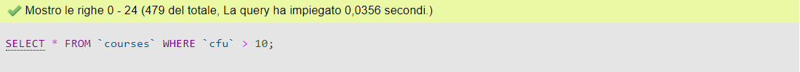
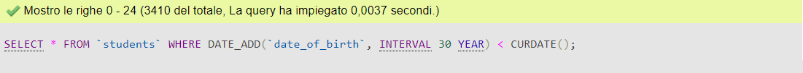
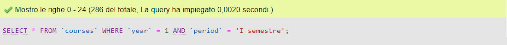
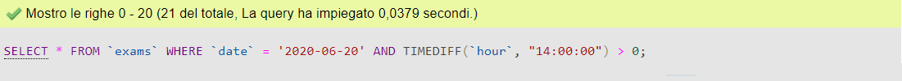
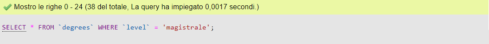
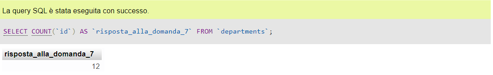
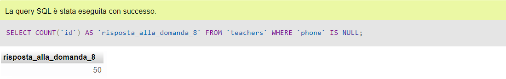

-
1. Selezionare tutti gli studenti nati nel 1990 (160)
SELECT *
FROM `students`
WHERE `date_of_birth` BETWEEN '1990-01-01' AND '1990-12-31';
-
2. Selezionare tutti i corsi che valgono più di 10 crediti (479)
SELECT *

FROM `courses`
WHERE `cfu` > 10;
-
3. Selezionare tutti gli studenti che hanno più di 30 anni
SELECT *

FROM `students`
WHERE DATE_ADD(`date_of_birth`, INTERVAL 30 YEAR) < CURDATE();
-
4. Selezionare tutti i corsi del primo semestre del primo anno di un qualsiasi corso di laurea (286)
SELECT *

FROM `courses`
WHERE `year` = 1
AND `period` = 'I semestre';
-
5. Selezionare tutti gli appelli d'esame che avvengono nel pomeriggio (dopo le 14) del 20/06/2020 (21)
SELECT *

FROM `exams`
WHERE `date` = '2020-06-20'
AND TIMEDIFF(`hour`, "14:00:00") > 0;
-
6. Selezionare tutti i corsi di laurea magistrale (38)
SELECT *

FROM `degrees`
WHERE `level` = 'magistrale';
-
7. Da quanti dipartimenti è composta l'università? (12)
SELECT COUNT(`id`) AS `risposta_alla_domanda_7`

FROM `departments`;
-
8. Quanti sono gli insegnanti che non hanno un numero di telefono? (50)
SELECT COUNT(`id`) AS `risposta_alla_domanda_8`

FROM `teachers`
WHERE `phone` IS NULL;